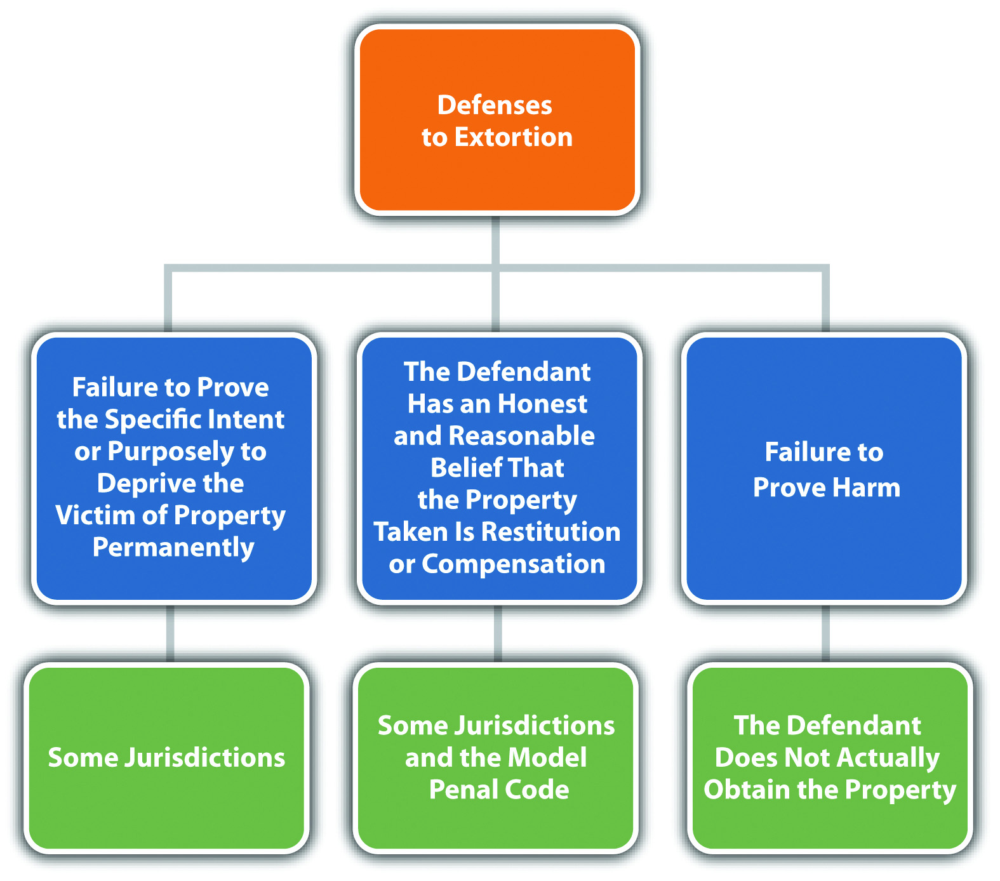
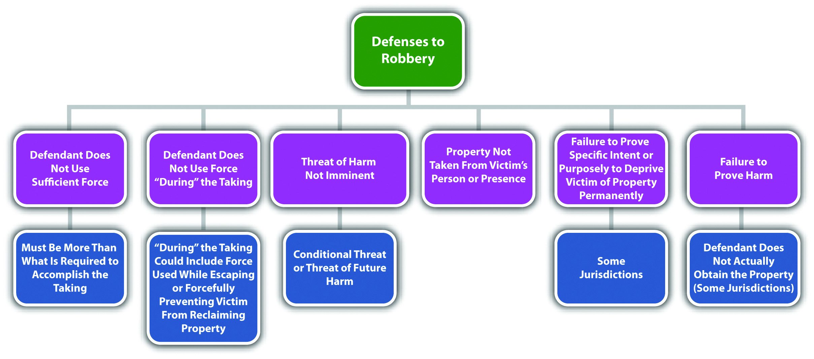
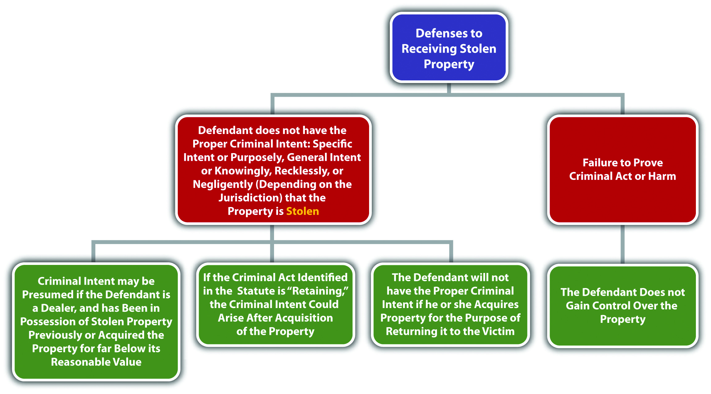
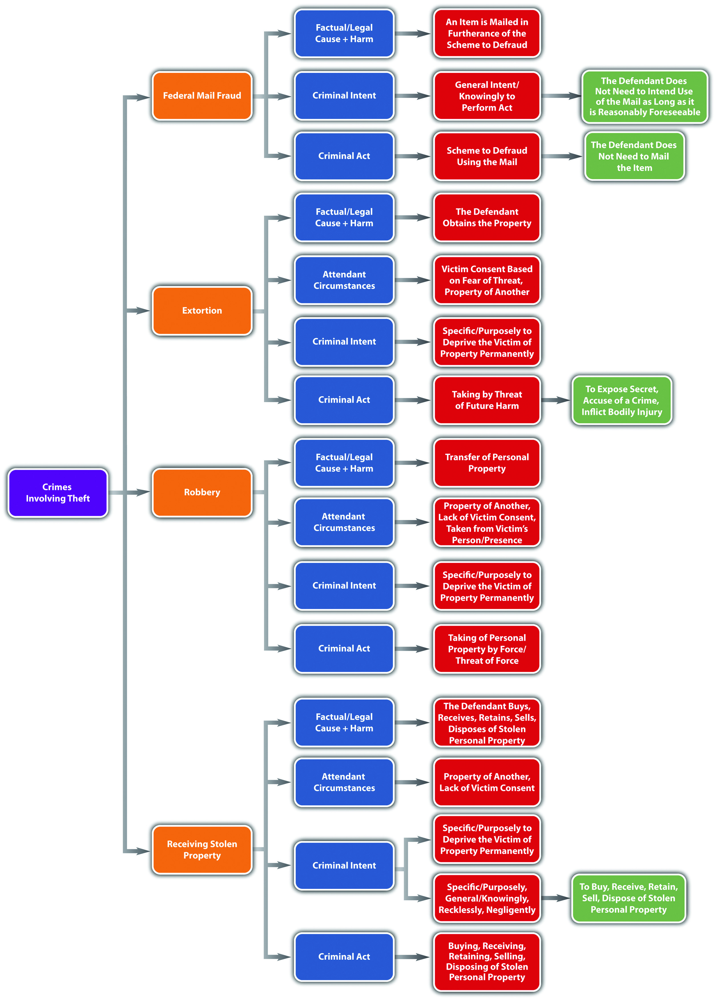

All states and the federal government criminalize extortionTheft by a threat of future harm., which is also called blackmail.K.S.A. § 21-3428, accessed March 18, 2011, http://kansasstatutes.lesterama.org/Chapter_21/Article_34/21-3428.html. As stated previously, the Model Penal Code criminalizes theft by extortion and grades it the same as all other nonforcible theft offenses (Model Penal Code § 223.4). Extortion is typically nonviolent, but the elements of extortion are very similar to robbery, which is considered a forcible theft offense. Robbery is discussed shortly.
Extortion has the elements of criminal act, criminal intent, attendant circumstances, causation, and harm, as is explored in Section 11.2.1 "Extortion".
The criminal act element required for extortion is typically the theft of property accomplished by a threat to cause future harm to the victim, including the threat to inflict bodily injury, accuse anyone of committing a crime, or reveal a secret that would expose the victim to hatred, contempt, or ridicule.Ga. Code § 16-8-16, accessed March 11, 2011, http://law.onecle.com/georgia/16/16-8-16.html. The Model Penal Code criminalizes theft by extortion when the defendant obtains property of another by threatening to inflict bodily injury on anyone, commit any criminal offense, accuse anyone of a criminal offense, expose any secret tending to subject any person to hatred, contempt, or ridicule or impair his credit and business repute, take or withhold action as an official, bring about a strike or boycott, testify with respect to another’s legal claim, or inflict any other harm that would not benefit the actor (Model Penal Code § 223.4). Note that some of these acts could be legal, as long as they are not performed with the unlawful intent to steal.
Rodney tells Lindsey that he will report her illegal drug trafficking to local law enforcement if she does not pay him fifteen thousand dollars. Rodney has probably committed the criminal act element required for extortion in most jurisdictions. Note that Rodney’s threat to expose Lindsey’s illegal activities is actually desirable behavior when performed with the intent to eliminate or reduce crime. However, under these circumstances, Rodney’s act is most likely criminal because it is supported by the intent to steal fifteen thousand dollars from Lindsey.
The criminal intent element required for extortion is typically the specific intent or purposely to commit the criminal act and to unlawfully deprive the victim of property permanently.Connecticut Criminal Jury Instructions §§53a-119(5) and 53a-122(a) (1), accessed March 12, 2011, http://www.jud.ct.gov/ji/criminal/part9/9.1-11.htm. This intent requirement is similar to the criminal intent element required for larceny and false pretenses theft, as discussed in Section 11 "Consolidated Theft Intent". Some jurisdictions only require general intent or knowingly to perform the criminal act.Ariz. Rev. Stat. § 13-1804, http://law.onecle.com/arizona/criminal-code/13-1804.html.
Review the example with Rodney and Lindsey in Section 11 "Example of Extortion Act". Change the example and assume that Rodney asks Lindsey to loan him the fifteen thousand dollars so that he can make a balloon payment due on his mortgage. Lindsey refuses. Rodney thereafter threatens to expose Lindsey’s drug trafficking if she doesn’t loan him the money. In many jurisdictions, Rodney may not have the criminal intent element required for extortion. Although Rodney performed the criminal act of threatening to report Lindsey for a crime, he did so with the intent to borrow money from Lindsey. Thus Rodney did not act with the specific intent or purposely to permanently deprive Lindsey of property, which could operate as a failure of proof or affirmative defense to extortion in many jurisdictions.
Extortion is a form of theft, so it has the same attendant circumstance required in consolidated theft statutes—the property stolen belongs to another. In many jurisdictions, it is an affirmative defense to extortion that the property taken by threat to expose a secret or accuse anyone of a criminal offense is taken honestly, as compensation for property, or restitution or indemnification for harm done by the secret or crime.Ga. Code § 16-8-16, accessed March 11, 2011, http://law.onecle.com/georgia/16/16-8-16.html. The Model Penal Code provides an affirmative defense to extortion by threat of accusation of a criminal offense, exposure of a secret, or threat to take or withhold action as an official if the property obtained was “honestly claimed as restitution or indemnification for harm done in the circumstances to which such accusation, exposure, lawsuit or other official action relates, or as compensation for property or lawful services” (Model Penal Code § 223.4).
Tara, a real estate broker, hires Trent to be a real estate sales agent in her small realty office. Tara decides she wants to get the property listing of a competitor by using Trent to obtain information. Tara tells Trent to pretend he is a buyer interested in the property. She asks him to make an appointment with the competitor, ask a lot of questions about the owner of the property, and thereafter bring Tara the information. Tara promises to pay Trent one thousand dollars for his time and effort. Trent spends several hours performing this task and thereafter demands his one thousand dollars payment. Tara tells Trent she is experiencing “tough times” and can’t afford to pay him. Trent threatens to tell Tara’s competitor what she is up to if she doesn’t pay him the one thousand dollars. Trent has probably not committed extortion in many jurisdictions. Although Trent threatened to expose Tara’s secret if she didn’t pay him one thousand dollars, Trent honestly believed he was owed this money for a job he performed that was directly related to the secret. Thus in many jurisdictions, Trent has an affirmative defense that the money demanded was compensation for services and not the subject of unlawful theft by extortion.
Extortion also requires the attendant circumstance of victim consent. With extortion, the victim consensually transfers the property based on fear inspired by the defendant’s threat.Oklahoma Uniform Jury Instructions No. CR 5-34, accessed March 12, 2011, http://www.okcca.net/online/oujis/oujisrvr.jsp?oc=OUJI-CR%205-34.
Review the example with Rodney and Lindsey in Section 11 "Example of Extortion Act". Assume that Lindsey grudgingly gives Rodney the fifteen thousand dollars so that he will not report her drug trafficking. In this example, Lindsey is consensually transferring the money to Rodney to prevent him from making good on his threat. Thus the attendant circumstance of victim consent based on fear is most likely present, and Rodney could be subject to prosecution for and conviction of extortion in most jurisdictions.
The criminal act must be the factual and legal cause of extortion harm, which is defined in Section 11 "Extortion Harm".
The defendant must obtain property belonging to another for the completed crime of extortion in most jurisdictions.Oklahoma Uniform Jury Instructions No. CR 5-34, accessed March 12, 2011, http://www.okcca.net/online/oujis/oujisrvr.jsp?oc=OUJI-CR%205-34. If the defendant commits the criminal act of threatening the victim with the appropriate criminal intent, but the victim does not actually transfer the property to the defendant, the defendant can only be charged with attempted extortion.Oklahoma Uniform Jury Instructions No. CR 5-32, accessed March 12, 2011, http://www.okcca.net/online/oujis/oujisrvr.jsp?oc=OUJI-CR%205-32.
Review the example with Rodney and Lindsey in Section 11 "Example of Extortion Act". Assume that after Rodney threatens to report Lindsey’s drug trafficking to local law enforcement, Lindsey calls local law enforcement, turns herself in for drug trafficking, and also reports Rodney for making the threat. In this case, because Rodney did not “obtain” property by threat, the crime of extortion is not complete, and attempted extortion would be the appropriate charge in most jurisdictions.
Figure 11.4 Diagram of Defenses to Extortion
Extortion is generally graded as a felony in most jurisdictions.Or. Rev. Stat. § 164.075, accessed March 12, 2011, http://law.onecle.com/oregon/164-offenses-against-property/164.075.html. As stated previously, the Model Penal Code grades extortion under its consolidated theft offense.
RobberyTheft by force or threat of imminent force. was the first common-law theft crime. The criminalization of robbery was a natural progression from other common-law crimes against the person because robbery always involves force, violence, or threat and could pose a risk of injury or death to the robbery victim, defendant, or other innocent bystanders. Recall from Chapter 9 "Criminal Homicide" that robbery is generally a serious felony that is included in most felony murder statutes as a predicate felony for first-degree felony murder. When robbery does not result in death, it is typically graded more severely than theft under a consolidated theft statute. Robbery grading is discussed shortly.
The elements of robbery are very similar to the elements of larceny and extortion. For the purpose of brevity, only the elements of robbery that are distinguishable from larceny and extortion are analyzed in depth. Robbery has the elements of criminal act, attendant circumstances, criminal intent, causation, and harm, as is explored in Section 11.2 "Extortion, Robbery, and Receiving Stolen Property".
It is the criminal act element that primarily distinguishes robbery from larceny and extortion. The criminal act element required for robbery is a taking of personal property by force or threat of force.Ind. Code § 35-42-5-1, accessed March 18, 2011, http://law.onecle.com/indiana/35/35-42-5-1.html. Force is generally physical force. The force can be slight, but it must be more than what is required to gain control over and move the property.S.W. v. State, 513 So. 2d 1088 (1987), accessed March 18, 2011, http://scholar.google.com/scholar_case?case=8956843531832075141&q= robbery+%22slight+force%22&hl=en&as_sdt=2,5. Many jurisdictions require force during the taking, which includes the use of force to prevent the victim from reclaiming the property, or during escape.State v. Handburgh, 830 P.2d 641 (1992), accessed March 18, 2011, http://scholar.google.com/scholar_case?case=2186457002998894202&q= State+v.+Handburgh&hl=en&as_sdt=2,5. The Model Penal Code requires force or threat “in the course of committing a theft” and defines this as occurring in “an attempt to commit theft or in flight after the attempt or commission” (Model Penal Code § 222.1(1)). Threat for robbery is a threat to inflict imminent force.Ala. Code § 13A-8-43, accessed March 18, 2011, http://law.onecle.com/alabama/criminal-code/13A-8-43.html.
While larceny and extortion also require a taking, the defendant typically accomplishes the larceny taking by stealth, or a false representation of fact. In extortion, the defendant accomplishes the taking by a threat of future harm that may or may not involve force.
Review the example given in Section 11 "Example of Extortion Act" with Rodney and Lindsey. In this example, Rodney threatened to expose Lindsey’s drug trafficking if she didn’t pay him fifteen thousand dollars. Change the example so that Rodney tells Lindsey he will kill her if she doesn’t write him a check for fifteen thousand dollars. Rodney exemplifies his threat by pointing to a bulge in his front jacket pocket that appears to be a weapon. In this scenario, Rodney has most likely committed the criminal act element required for robbery, not extortion. Rodney’s threat is a threat of immediate force. Compare this threat to Rodney’s threat to expose Lindsey’s drug trafficking, which is a threat of future harm that relates to Lindsey’s arrest for a crime, rather than force.
Peter, a jewelry thief, notices that Cheryl is wearing a diamond ring. Peter walks up to Cheryl and asks her if she wants him to read her palm. Cheryl shrugs her shoulders and says, “Sure! What have I got to lose?” While Peter does an elaborate palm reading, he surreptitiously slips Cheryl’s diamond ring off her finger and into his pocket. Peter has probably not committed the criminal act element required for robbery in this case. Although Peter used a certain amount of physical force to remove Cheryl’s ring, he did not use any force beyond what was required to gain control over Cheryl’s property and move it into his possession. Thus Peter has probably committed the criminal act element required for larceny theft, not robbery, and is subject to less severe sentencing for this lower-level offense.
Another difference between robbery and larceny or extortion is the attendant circumstances requirement(s). Robbery requires the same attendant circumstance required for both larceny and extortion—that the property taken belongs to another. It also has the same attendant circumstance as larceny—that the defendant accomplish the taking against the victim’s will and without consent. However, robbery has one additional attendant circumstance, which is that the property be taken from the victim’s person or presence.Cal. Penal Code § 211, accessed March 19, 2011, http://codes.lp.findlaw.com/cacode/PEN/3/1/8/4/s211. The property does not need to be in the actual physical possession of the victim, as long as it is under the victim’s control.Jones v. State, 652 So. 2d 346 (1995), accessed March 19, 2011, http://scholar.google.com/scholar_case?case=11856873917512077763&q= robbery+%22from+the+victim%27s+person%22&hl=en&as_sdt=2,5&as_ylo=2000. Thus if the victim could have prevented the taking if not for the force, violence, or threat posed by the defendant, this attendant circumstance is present.Jones v. State, 652 So. 2d 346 (1995), accessed March 19, 2011, http://scholar.google.com/scholar_case?case=11856873917512077763&q= robbery+%22from+the+victim%27s+person%22&hl=en&as_sdt=2,5&as_ylo=2000.
Review the example given in Section 11 "Example of Robbery Act" with Rodney and Lindsey. In this example, Rodney tells Lindsey he will kill her if she doesn’t write him a check for fifteen thousand dollars. Change this example so that Rodney knows Lindsey has recently withdrawn fifteen thousand dollars in cash from the bank. Rodney demands the cash, tells Lindsey he will kill her if she doesn’t give it to him, and gestures toward a bulge in his front jacket pocket that appears to be a weapon. Lindsey tells Rodney, “The money is in my purse, but if you take it, you will be ruining my life!” and points to her purse, which is on the kitchen table a few feet away. Rodney walks over to the table, opens Lindsey’s purse, and removes a large envelope stuffed with bills. In this scenario, the attendant circumstances for robbery appear to be present. Rodney took the property of another without consent. Although the money was not on Lindsey’s person, it was in her presence and subject to her control. If Rodney had not threatened Lindsey’s life, she could have prevented the taking. Thus Rodney has most likely committed robbery and is subject to prosecution for and conviction of this offense.
The criminal intent element required for robbery is the same as the criminal intent element required for larceny and extortion in many jurisdictions. The defendant must have the specific intent or purposely to commit the criminal act and to deprive the victim of the property permanently.Metheny v. State, 755 A.2d 1088 (2000), accessed March 19, 2011, http://scholar.google.com/scholar_case?case=10315203348655203542&q= robbery+%22deprive+permanently%22&hl=en&as_sdt=2,5. Some jurisdictions do not require the intent to permanently deprive the victim of property and include temporary takings in the robbery statute.Fla. Stat. Ann. § 812.13, accessed March 19, 2011, http://law.onecle.com/florida/crimes/812.13.html.
Review the example with Rodney and Lindsey in Section 11 "Example of a Case Lacking Extortion Intent". In this example, Rodney demands a loan from Lindsey in the amount of fifteen thousand dollars and threatens to expose her drug trafficking activities if she doesn’t comply. Change this example so that Rodney tells Lindsey to loan him fifteen thousand dollars or he will kill her, gesturing at a bulge in his front jacket pocket that appears to be a weapon. In a jurisdiction that requires the criminal intent to permanently deprive the victim of property for robbery, Rodney does not have the appropriate criminal intent. In a jurisdiction that allows for the intent to temporarily deprive the victim of property for robbery, Rodney has the appropriate criminal intent and may be charged with and convicted of this offense.
The criminal act supported by the criminal intent must be the factual and legal cause of the robbery harm, which is the same as the harm requirement for larceny and extortion: the property must be transferred to the defendant.Oklahoma Uniform Jury Instructions No. CR 4-141, accessed March 19, 2011, http://www.okcca.net/online/oujis/oujisrvr.jsp?o=248. In some jurisdictions, no transfer of property needs to take place, and the crime is complete when the defendant employs the force or threat with the appropriate criminal intent.Williams v. State, 91 S.W. 3d 54 (2002), accessed March 19, 2011, http://scholar.google.com/scholar_case?case=9518129765374420507&q= robbery+%22transfer+of+property%22&hl=en&as_sdt=2,5&as_ylo=2000.
Review the example with Rodney and Lindsey in Section 11 "Example of Robbery Attendant Circumstances". In this example, Rodney threatens to kill Lindsey if she does not give him fifteen thousand dollars out of her purse and gestures to a bulge in his front jacket pocket that appears to be a weapon. Change this example so that Lindsey leaps off of the couch and tackles Rodney after his threat. She reaches into his pocket and determines that Rodney’s “gun” is a plastic water pistol. Rodney manages to get out from under Lindsey and escapes. If Rodney and Lindsey are in a jurisdiction that requires a transfer of property for the harm element of robbery, Rodney has probably only committed attempted robbery because Rodney did not get the chance to take the money out of Lindsey’s purse. If Rodney and Lindsey are in a jurisdiction that does not require a transfer of property for the harm element of robbery, Rodney may be subject to prosecution for and conviction of this offense.
Figure 11.5 Diagram of Defenses to Robbery
As stated previously, robbery is generally graded as a serious felony that can serve as the predicate felony for first-degree felony murderCal. Penal Code § 189, accessed March 19, 2011, http://law.onecle.com/california/penal/189.html. and a strike in states that have three strikes statutes.Cal. Penal Code § 1192.7, accessed March 19, 2011, http://law.onecle.com/california/penal/1192.7.html. Robbery grading is aggravated by the use of a weapon or when the defendant inflicts serious bodily injury.Tex. Penal Code § 29.03, accessed March 12, 2011, http://law.onecle.com/texas/penal/29.03.00.html. The Model Penal Code grades robbery as a felony of the second degree, unless the actor attempts to kill anyone or purposely inflicts or attempts to inflict serious bodily injury, in which case it is graded as a felony of the first degree (Model Penal Code § 222.1(2)).
Table 11.2 Comparing Larceny, Extortion, and Robbery
| Crime | Criminal Act | Criminal Intent | Attendant Circumstance | Harm |
|---|---|---|---|---|
| Larceny | Taking by stealth or false representation of fact | Specific or purposely to deprive the victim of property permanently* | Victim’s property, lack of victim consent | Property transfer |
| Extortion | Taking by threat of future harm; not necessarily physical | Specific or purposely to deprive the victim of property permanently* | Victim’s property; the victim consents based on fear | Property transfer |
| Robbery | Taking by force or threat of imminent force | Specific or purposely to deprive the victim of property permanently* | Victim’s property, lack of victim consent, property is taken from the victim’s person or presence | Property transfer** |
| *In some jurisdictions, the defendant can intend a temporary taking. | ||||
| **In some jurisdictions, the victim does not need to transfer the property to the defendant. | ||||
All jurisdictions criminalize receiving stolen propertyReceiving, buying, retaining, selling, or disposing of stolen property., to deter theft and to break up organized criminal enterprises that benefit from stealing and selling stolen goods. Receiving stolen property criminal statutes often are targeted at pawnbrokers or fencesA defendant who facilitates the buying and selling of stolen property. who regularly buy and sell property that is the subject of one of the theft crimes discussed in the preceding sections. As stated, the Model Penal Code includes receiving stolen property in its consolidated theft offense (Model Penal Code §§ 223.1, 223.6). Receiving stolen property has the elements of criminal act, criminal intent, attendant circumstances, causation, and harm, as is explored in Section 11.2.3 "Receiving Stolen Property".
The criminal act element required for receiving stolen property in many jurisdictions is receiving, retaining, disposing of,Ala. Code § 13A-8-16, accessed March 12, 2011, http://law.onecle.com/alabama/criminal-code/13A-8-16.html. selling,Cal. Penal Code § 496, accessed March 12, 2011, http://law.onecle.com/california/penal/496.html. trafficking in,Fla. Stat. Ann. § 812.019, accessed March 12, 2011, http://law.onecle.com/florida/crimes/812.019.html. buying, or aiding in concealmentMass. Gen. Laws ch. 266 § 60, http://law.onecle.com/massachusetts/266/60.html. of stolen personal property. The Model Penal Code defines the criminal act element as receiving, retaining, or disposing of stolen movable property (Model Penal Code § 223.6(1)). The criminal act does not generally require the defendant to be in actual physical possession of the property, as long as the defendant retains control over the item(s).Ga. Code § 16-8-7, accessed March 12, 2011, http://law.onecle.com/georgia/16/16-8-7.html. This would be a constructive possession. The Model Penal Code defines receiving as “acquiring possession, control or title, or lending on the security of the property” (Model Penal Code § 223.6(1)). Note that the criminal act element of receiving stolen property includes both buying and selling. Thus dealers that regularly purchase and then sell stolen items can be prosecuted for both of these acts under the same statute.
Chanel, a fence who deals in stolen designer perfume, arranges a sale between one of her thieves, Burt, and a regular customer, Sandra. Chanel directs Burt to drop off a shipment of one crate of the stolen perfume at Chanel’s storage facility and gives Burt the key. Chanel pays Burt five thousand dollars for the perfume delivery. Chanel thereafter accepts a payment of ten thousand dollars from Sandra and gives Sandra another key with instructions to pick up the perfume the next day after it has been delivered. Chanel could probably be charged with and convicted of receiving stolen property in most jurisdictions. Although Chanel did not ever acquire actual possession of the stolen designer perfume, Chanel had control over the property or constructive possession through her storage facility. Chanel’s acts of buying the perfume for five thousand dollars and then selling it for ten thousand dollars both would be criminalized under one statute in many jurisdictions. Thus Chanel could be prosecuted for both acts as separate charges of receiving stolen property.
The criminal intent element required for receiving stolen property has two parts. First, the defendant must have the intent to commit the criminal act, which could be specific intent or purposely, general intent or knowingly, recklessly, or negligently to either buy-receive or sell-dispose of stolen personal property, depending on the jurisdiction. This means that the defendant must have actual knowledge that the property is stolen,Mass. Gen. Laws ch. 266 § 60, accessed March 13, 2011, http://law.onecle.com/massachusetts/266/60.html. or the defendant must be aware or should be aware of a risk that the property is stolen.Ala. Code § 13A-8-16(a), accessed March 12, 2011, http://law.onecle.com/alabama/criminal-code/13A-8-16.html. The Model Penal Code requires the defendant to purposely commit the act knowing that the property is stolen or believing that the property has probably been stolen (Model Penal Code § 223.6(1)). The Model Penal Code also provides a presumption of knowledge or belief when the defendant is a dealer, which is defined as a “person in the business of buying or selling goods including a pawnbroker,” and has been found in possession or control of property stolen from two or more persons on more than one occasion, or has received stolen property in another transaction within the year preceding the transaction charged, or acquires the property for consideration far below its reasonable value (Model Penal Code § 223.6(2)). Many state statutes have a similar provision.Ala. Code § 13A-8-16, accessed March 13, 2011, http://law.onecle.com/alabama/criminal-code/13A-8-16.html.
The second aspect of criminal intent for receiving stolen property is the defendant’s specific intent or purposeful desire to deprive the victim of the property permanently, which is required in some jurisdictions.Hawaii Criminal Jury Instructions No. 10.00, 10.20, accessed March 13, 2011, http://www.courts.state.hi.us/docs/docs4/crimjuryinstruct.pdf. This creates a failure of proof or affirmative defense that the defendant received and retained the stolen property with the intent to return it to the true owner.Ga. Code § 16-8-7(a), accessed March 12, 2011, http://law.onecle.com/georgia/16/16-8-7.html. The Model Penal Code also provides a defense if “the property is received, retained, or disposed of with purpose to restore it to the owner” (Model Penal Code § 223.6(1)).
Chip’s iPod breaks, so he decides to go to the local electronics store and buy a new one. As he is approaching the store, Heather saunters over from a nearby alley and asks him if he wants to buy a brand new iPod for ten dollars. Suspicious of the price, Chip asks Heather to see the iPod. She hands it to him, and he notices that the box looks like it has been tampered with and a price tag removed. He shrugs, takes ten dollars out of his wallet, and hands it to Heather in exchange for the iPod. In jurisdictions that require actual knowledge that the property is stolen, Chip probably does not have the appropriate criminal intent for receiving stolen property because he did not know Heather and had no way of knowing if Heather was selling him stolen property. In jurisdictions that require awareness of a risk that the property is stolen, Chip may have the appropriate criminal intent because he knew the price was too low and noticed that the box had been tampered with to remove evidence of an actual price or vendor.
Change the example so that Chip is a pawnshop broker, and Heather brings the iPod into his shop to pawn for the price of ten dollars. In many jurisdictions, if Chip accepts the iPod to pawn, this creates a presumption of receiving stolen property criminal intent. Chip is considered a dealer, and in many jurisdictions, dealers who acquire property for consideration that they know is far below the reasonable value are subject to this type of presumption.
Change the example again so that Chip notices the following message written on the back of the iPod box: “This iPod is the property of Eugene Schumaker.” Chip is Eugene Schumaker’s friend, so he pays Heather the ten dollars to purchase the iPod so he can return it to Eugene. In many jurisdictions and under the Model Penal Code, Chip can use his intent to return the stolen property to its true owner as a failure of proof or affirmative defense to receiving stolen property.
If retaining is the criminal act element described in the receiving stolen property statute, a defendant can still be convicted of receiving stolen property if he or she originally receives the property without the appropriate criminal intent, but later keeps the property after discovering it is stolen.Connecticut Criminal Jury Instructions §§53a-119(8) and 53a-122 through 53a-125b, accessed March 13, 2011, http://www.jud.ct.gov/ji/criminal/part9/9.1-15.htm.
Review the example with Chip and Heather in Section 11 "Example of Receiving Stolen Property Intent". Change this example so that Chip is not a dealer and is offered the iPod for one hundred dollars, which is fairly close to its actual value. Chip purchases the iPod from Heather and thereafter drives home. When he gets home, he begins to open the box and notices the message stating that the iPod is the property of Eugene Schumaker. Chip thinks about it for a minute, continues to open the box, and then retains the iPod for the next six months. If Chip is in a state that defines the criminal act element for receiving stolen property as retains, then Chip most likely committed the criminal act with the appropriate criminal intent (knowledge that the property is stolen) and may be subject to prosecution for and conviction of this offense.
The property must be stolen for this crime, so the prosecution must prove the attendant circumstances that the property belongs to another and lack of victim consent.
The criminal act must be the factual and legal cause of receiving stolen property harm, which is defined in Section 11 "Receiving Stolen Property Harm".
The defendant must buy, receive, retain, sell, or dispose of stolen property for the completed crime of receiving stolen property in most jurisdictions.Ala. Code § 13A-8-16, accessed March 13, 2011, http://law.onecle.com/alabama/criminal-code/13A-8-16.html. If the defendant does not actually gain or transfer control of the property, only attempted receiving stolen property can be charged.
Figure 11.6 Diagram of Defenses to Receiving Stolen Property
Receiving stolen property is graded as a felony-misdemeanorCal. Penal Code § 496, accessed March 13, 2011, http://law.onecle.com/california/penal/496.html. or as a misdemeanor if the stolen property is of low value and a felony if the stolen property is of high value.Ga. Code § 16-8-12, accessed March 13, 2011, http://law.onecle.com/georgia/16/16-8-12.html.
Figure 11.7 Diagram of Crimes Involving Theft
Answer the following questions. Check your answers using the answer key at the end of the chapter.